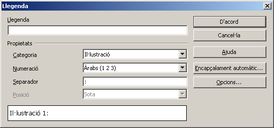
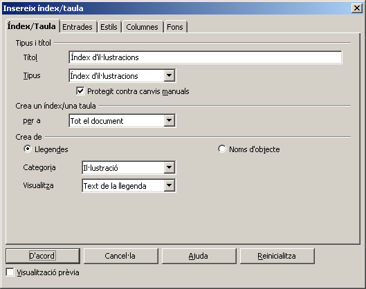
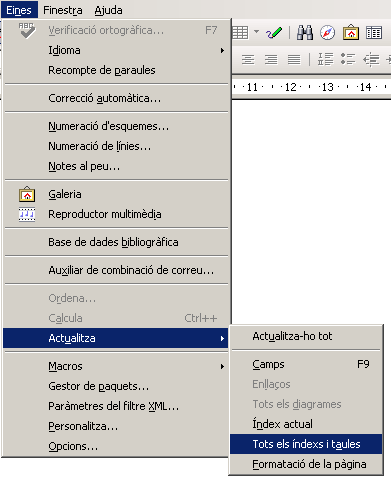

Índex d'il·lustracions
De la mateixa manera que el LibreOffice Writer permet crear un índex amb les referències a la pàgina on comença cada capítol, també permet portar una referència de la pàgina on apareix una determinada il·lustració.
Cal tenir present que, si hi ha intenció de generar un índex d'il·lustracions, cal actuar d'una determinada forma quan inserim les imatges que volem fer aparèixer a l'índex.
Inserció de les il·lustracions. Nom
Quan voleu inserir una il·lustració al vostre document del LibreOffice Writer, heu de donar-li un nom (afegir-li una llegenda).
- Recupereu el document essersunicellulars.odt.
- Inseriu la imatge
 en qualsevol posició del primer capítol (Bacteri (Viquipèdia)).
en qualsevol posició del primer capítol (Bacteri (Viquipèdia)).
- Si no ho està, seleccioneu la imatge i, clicant amb el botó dret del ratolí, feu aparèixer el menú de context. Trieu l'opció Encapçalament…

- Escriviu una llegenda per a la il·lustració (per exemple, Bacteri: Salmonella Typhimurium).
- Assegureu-vos que la llegenda és de la Categoria | Il·lustració.
- Accepteu les modificacions. Veureu que, ara, la il·lustració té un peu: el text que heu entrat com a llegenda.
- Inseriu la imatge
 en qualsevol posició del segon capítol (Arqueobacteri (Viquipèdia)).
en qualsevol posició del segon capítol (Arqueobacteri (Viquipèdia)).
- Repetiu el procés realitzat amb la imatge anterior, amb la llegenda (per exemple) Archaebacteria Stain Thermophilic a Yellowstone.
- Inseriu la imatge
 en qualsevol posició del tercer capítol (Eucariota (Viquipèdia)).
en qualsevol posició del tercer capítol (Eucariota (Viquipèdia)).
- Repetiu el procés realitzat amb les imatges anteriors (i la llegenda Ameba).
Crear un índex d'il·lustracions
Per tal de crear l'índex de les il·lustracions, caldrà que actueu de forma idèntica a com heu actuat per tal de crear l'índex del document.
- Continueu amb el document anterior (essersunicellulars.odt).
- Aneu a la fi del document i feu Insereix | Índexs i taules | índexs i taules…

- Al quadre de diàleg que us apareix, trieu Tipus | Índex d'il·lustracions.
- Poseu el títol que vulgueu.
- Assegureu-vos de tenir Categoria | Il·lustració.
- Si voleu, podeu posar Visualitza | Text de la llegenda.
Al moment de clicar el botó D'acord, es crearà l'índex de les il·lustracions que heu introduït al document.
Actualitzar un índex d'il·lustracions
Una vegada creat l'índex d'il·lustracions, podeu actualitzar-lo fent Eines | Actualitza | Tots els índexs i taules.


|
|

|
|